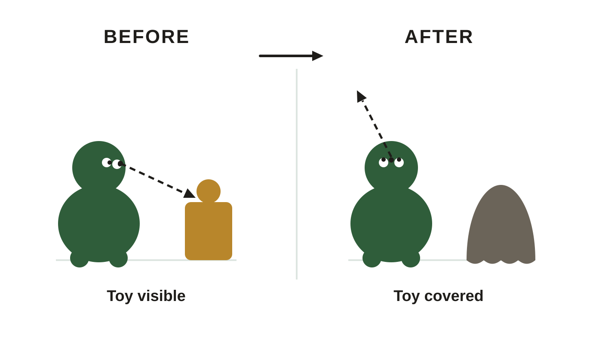
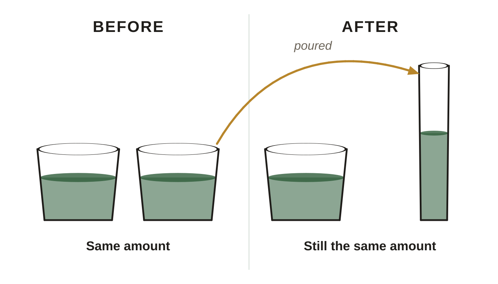

Cognitive development across the lifespan. These are the same figures as in your Class Notes, in the same order. If a figure in your notes shows as a gray box, use this page instead.
Slide 8. Object Permanence

Before and after the cover goes on. The toy is still there, and the infant has stopped looking.
Slide 14. Predict What the Child Says

Piaget's liquid conservation task: does the child say the tall, narrow glass holds more, though nothing was added?